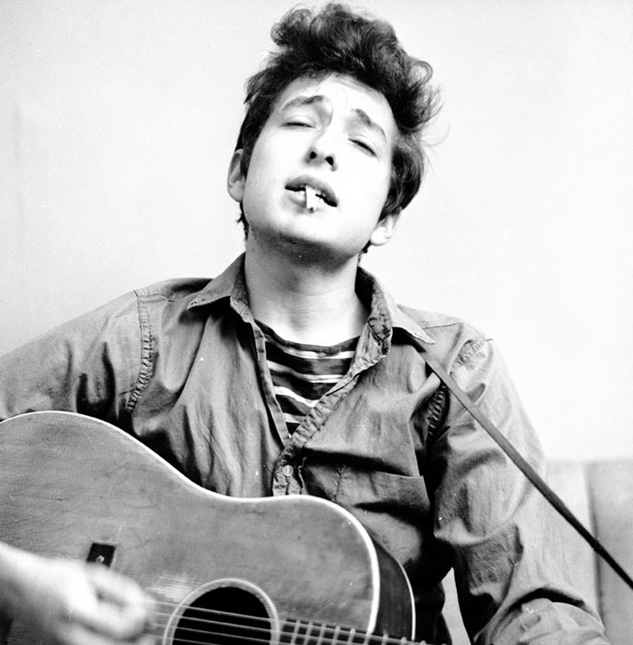

Fingerstyle guitar is the playing of the guitar by plucking the strings directly with the fingertips, fingernails, or picks attached to fingers.
List of some of the best known figerstyle guitarists
This enables a single guitarist to perform multiple song elements. This enables those who sing and play the guitar to accompany their own arrangements, and smaller groups with a single guitarist can then rely on that guitarist to provide multiple musical elements.
Fingerpicking is a standard technique on the classical or nylon string guitar, but is considered more of a specialized technique on steel string guitars. Fingerpicking is less common on electric guitars, except in the heavy metal music virtuoso style of lead guitar playing known as shred guitar.
Some fingerpicking guitarists also intersperse percussive tapping along with the melody, chords and bassline. This enables a single guitarist to provide all of these important song elements.